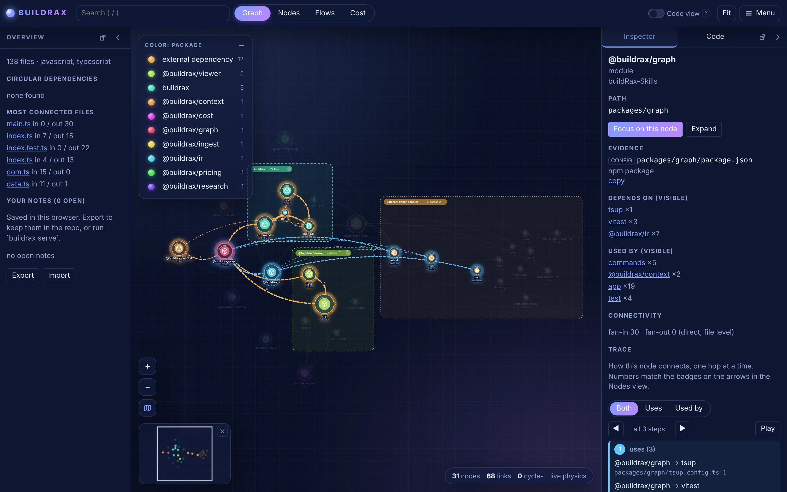

See how your codebase is really put together, before you or your AI agent change it.
BuildRAX scans a repo on your machine into an evidence-backed architecture map: packages, files, imports, endpoints, databases and paid services, with a file:line behind every box and arrow.

This repository, scanned by itself: 138 files, zero circular dependencies, about 1.5 s.
Code grows faster than anyone's picture of it.
Inherited code, AI-generated code and fast side projects all end up the same way: nobody can say what depends on what. Tap or hover a card for the fix.
Click a file. See what breaks.
A real scan of fixtures/sample-monorepo, redrawn here. Pick any box, then switch between what depends on it (impact) and what it depends on. The red loop is a genuine circular import the scan found.
Select a file
Click any box in the graph.
buildrax trace <file> --direction upExplore, trace, follow, price.
Recorded from the real viewer. No mock-ups. Each loop is about 20 to 25 seconds.
Your agent reads a map, not your whole repo.
The same scan feeds the agent skill. Output below is real, from the CLI on the sample fixture. Press replay to watch it run.
Tokens the agent has to read
Measured on this repository (138 files). Token counts are estimates (characters ÷ 4), not billing numbers.
Deterministic: same repo, same IDs, same digest. Your private notes are never included.
Built for the person holding the repo.
Architecture that can't erode quietly.
Build the map in CI on every push. Pull requests get a plain-words architecture diff, and a new circular dependency can fail the build. The comment below is real diff --markdown output; the PR frame is an illustration.
origin/main
| Before | After | |
|---|---|---|
| Nodes | 24 | 26 |
| Links | 16 | 18 |
⚠ 1 circular dependency introduced
a.ts ↔ b.ts
What a reviewer gets
- Nodes and links before and after
- Cycles introduced, named by file
- What was added or removed
- An optional check that fails the PR on a new cycle
buildrax diff --since origin/main --markdownSetup guide: docs/ci.md
Local by default. Evidence on every edge.
- Never runs your code and never calls an LLM while scanning.
- Source stays local. scan, view, digest, trace, routes and diff make no network requests.
- Opt-in lookups only, shown first, and only public package names go to allowlisted hosts.
- Secrets masked. A real
.envis never opened. - Your notes are never sent anywhere or added to agent context.
Measured, not promised
Measured on this repo on the build machine. Your numbers will differ. Cost figures are estimates from dated list prices; anything without a price feed is reported as "price needed".
Three commands. About a minute.
Needs Node.js 22+ and pnpm. Not on npm yet, so install from source.
git clone https://github.com/chetanya1998/buildRax-Skills.git && cd buildRax-Skills && pnpm install && pnpm buildalias buildrax="node $PWD/packages/cli/dist/bin.js"buildrax scan path/to/your-repoStatic, local, deterministic.
buildrax view path/to/your-repo --openOne offline HTML file. Add --no-source before sharing.
Supports today: TypeScript, JavaScript, Python · Next.js, Express, Fastify, Hono, Koa, NestJS, FastAPI, Flask · docker-compose, Terraform, Kubernetes, Vercel, Netlify, Fly, Render, Prisma · npm, pnpm, yarn, poetry, uv lockfiles.
Known limits
Import-level and file-level for now: no function-level call graph yet, so flow shows what a handler's file can reach, not one runtime path. Static analysis cannot see dynamic imports or runtime wiring; a missing link is not proof of no dependency.